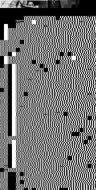

|  | We are in the process of incorporating Shoebox functionality into the Natural Language Toolkit. There is currently some documentation and a tutorial. Both are works-in-progress. Expect errors, inconsistencies, bugs, etc.
|
The author may be contacted at stuart AT zapata DOT org.